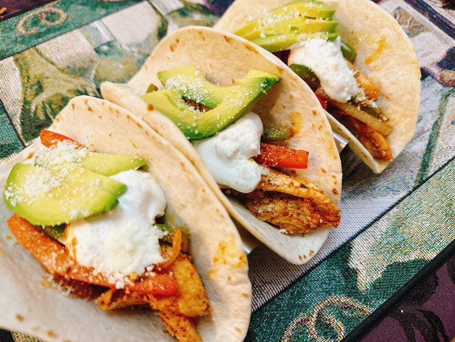

Chicken Fajita Tacos

Description
This Chicken Fajita Tacos recipe brings together vibrant flavors and colorful ingredients for a
delicious and satisfying meal. The chicken is marinated in a zesty blend of lime juice, garlic,
cumin, and chili powder, infusing it with bold, mouthwatering flavors. Once marinated, the chicken
is grilled or sautéed to perfection alongside a medley of bell peppers and onions, which adds a
delightful sweetness and a touch of smokiness. The mixture is then served in warm, soft tortillas and
topped with fresh ingredients such as cilantro, avocado, and a squeeze of lime. Whether you’re preparing
a quick weeknight dinner or hosting a casual gathering, these Chicken Fajita Tacos are sure to impress
with their rich, savory taste and vibrant presentation.
Ingredients
- 1/4 cup orange juice
- 2 tablespoons mild taco seasoning (see Note)
- 2 tablespoons vegetable oil
- 1 pound boneless skinless chicken breasts, cut into strips
- 1/2 onion, cut into strips
- 1/2 green bell pepper, seeded and cut into strips
- 1/2 red bell pepper, seeded and cut into strips
- 8 (6 inch) flour tortillas
- 1 avocado, pitted and sliced, or as needed
- 1/2 cup sour cream, or as needed
- 1/2 cup crumbled cotija cheese, or as needed
Steps
- Combine orange juice, taco seasoning, and vegetable oil in a large resealable bag. Add chicken, coat with the marinade, squeeze out excess air, and seal the bag. Marinate in the refrigerator overnight
- Heat a cast iron skillet over medium high heat.
- Cook chicken in the hot skillet for 5 minutes. Add onion, green bell pepper, and red bell pepper. Cook until peppers are crisp tender, 4 to 5 minutes. An instant-read thermometer inserted into center of chicken strips should read 165 degrees F (74 degrees C).
- Heat tortillas until soft and pliable. Top with chicken fajita mixture, avocado, sour cream, and cotija cheese. Serve immediately.